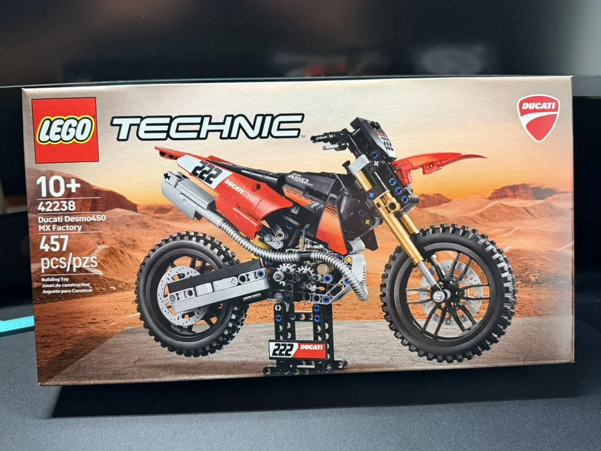
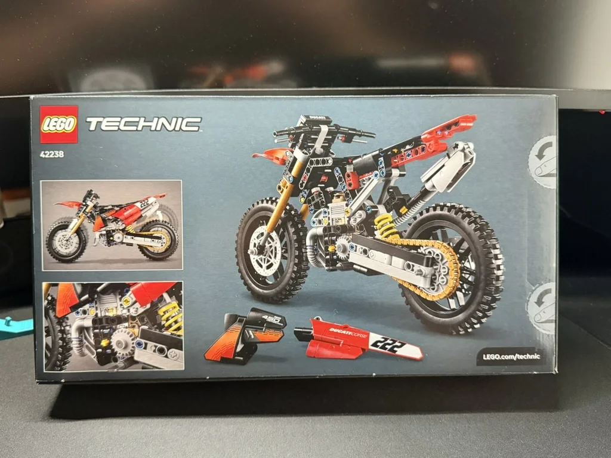
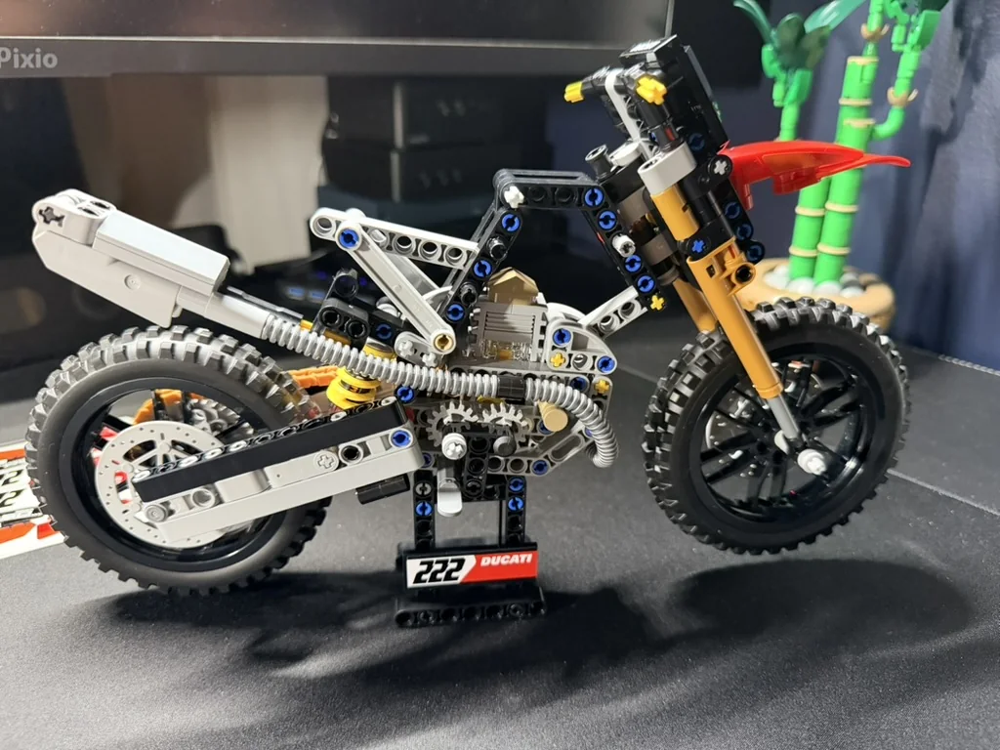
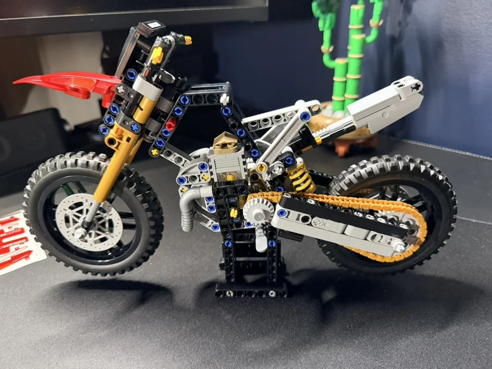
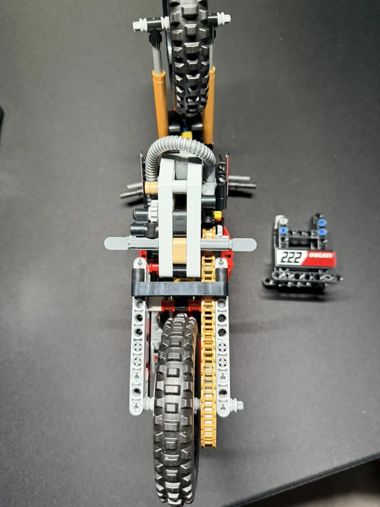
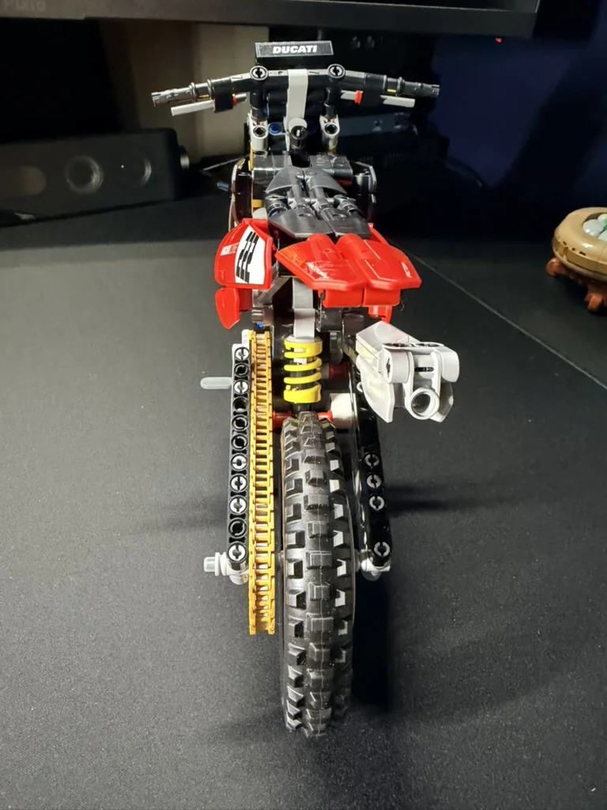
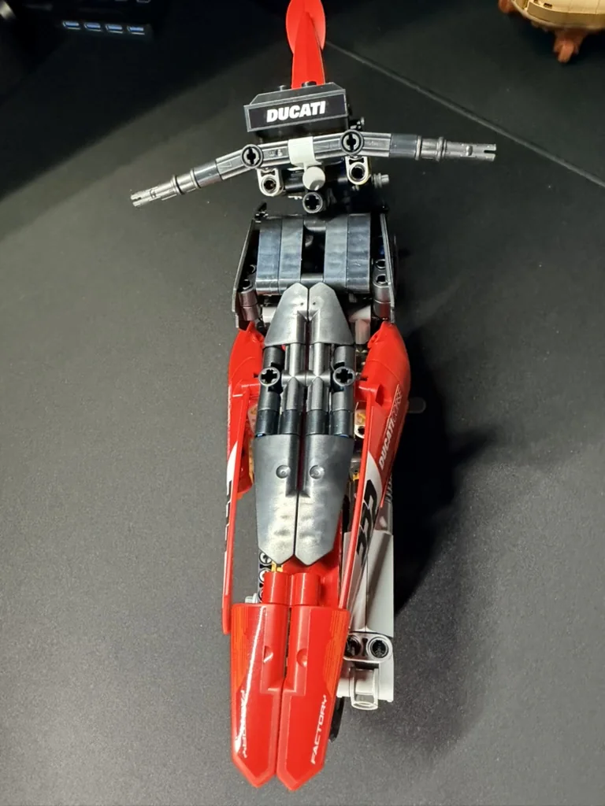
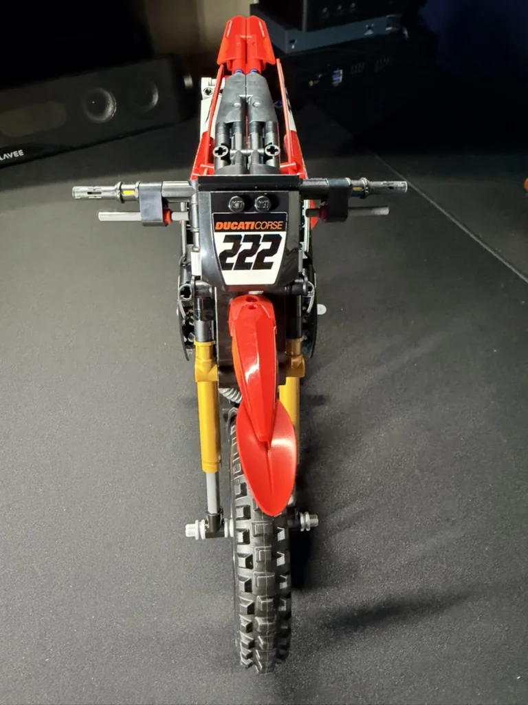
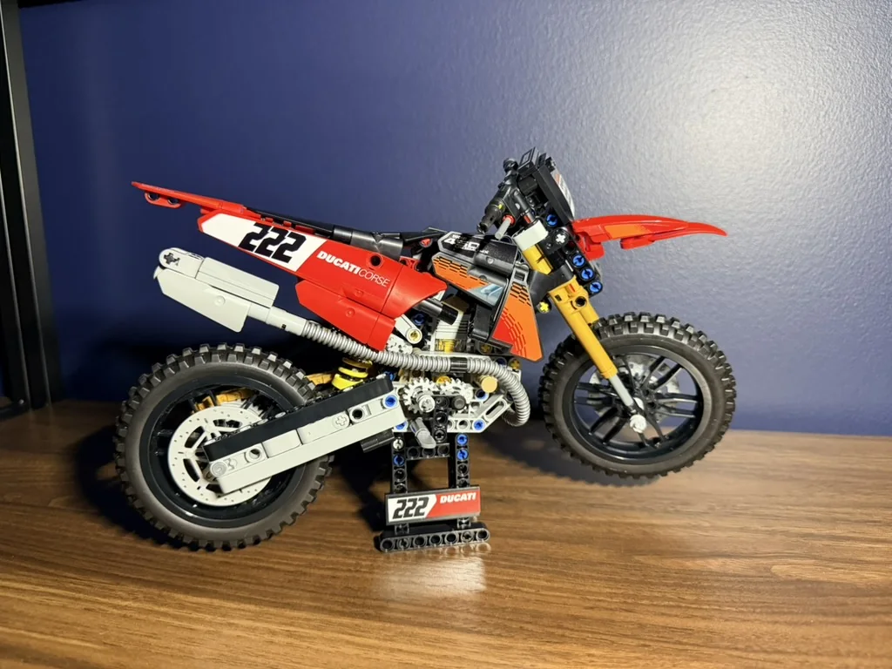
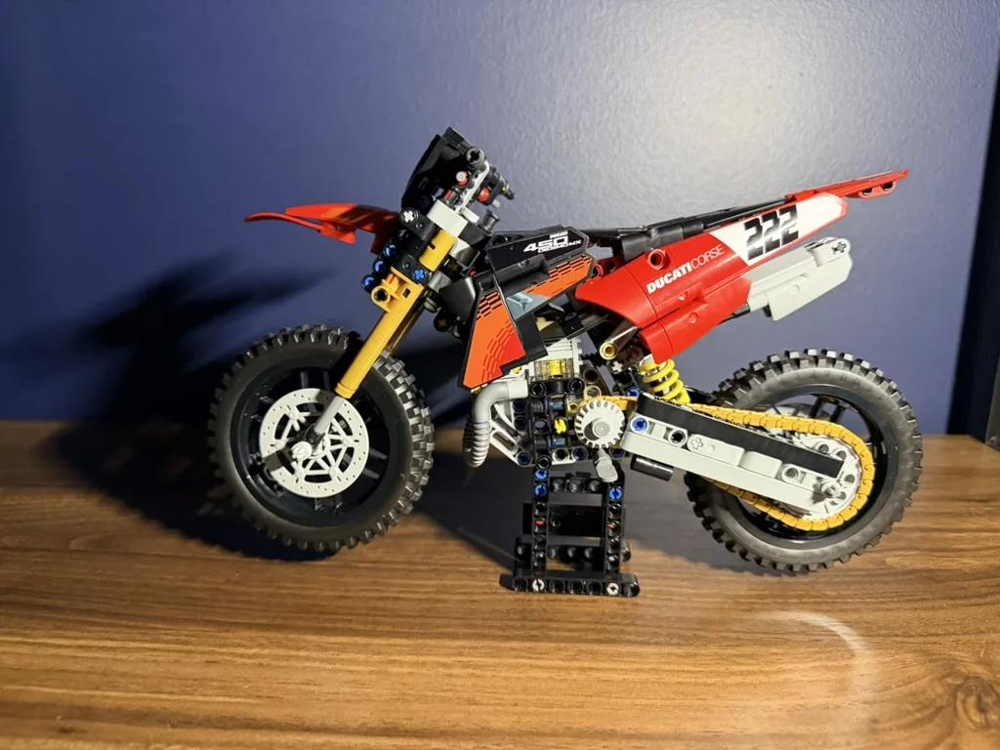

Ducati Desmo450 MX
A compact LEGO Technic motorcycle build with working mechanical details, off-road styling and plenty of character packed into 457 pieces.

Small set. Plenty going on.
The Ducati Desmo450 MX Factory is a much smaller project than some of the larger Technic builds, but it still delivers the mechanical construction that makes this style of set fun. The exposed frame, suspension, chain drive and engine details all remain visible as the bike comes together.
Ready for the dirt.
The box immediately sets the tone with the red Ducati bodywork, gold front suspension and motocross styling. The back gives a better look at the mechanical side of the model before opening it up.


The engineering takes shape first.
Before the red body panels go on, the frame leaves nearly everything exposed. This stage makes it easy to appreciate the suspension, drivetrain, engine construction and the way the narrow motorcycle chassis is tied together.



Suspension, chain and motocross character.
The narrow profile puts the working details right out in the open. The gold fork, yellow rear spring, chain drive and exhaust help give the model a convincing dirt-bike look even before the final panels are fitted.



The bodywork brings it home.
With the red panels and Ducati graphics installed, the mechanical frame turns into a sharp display model. The finished bike keeps enough of the Technic structure visible that the engineering remains part of the look.


A fun Technic build without the huge commitment.
The Ducati is a compact build that still gives you gears, suspension, exposed mechanics and a finished model with a lot of personality. It works well as a shorter project between the much larger builds and looks great on its stand when finished.
← Back to Builds